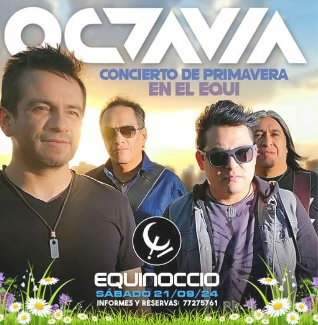
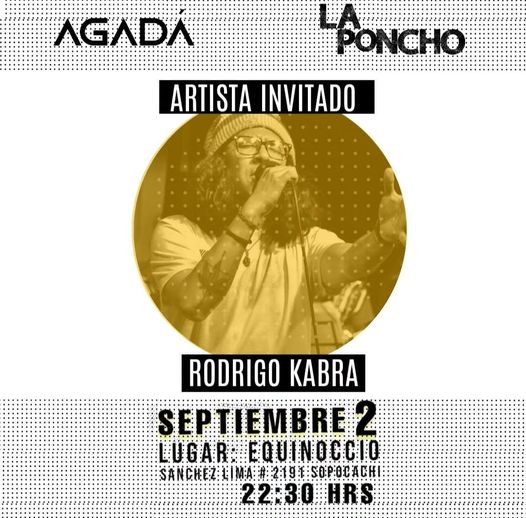
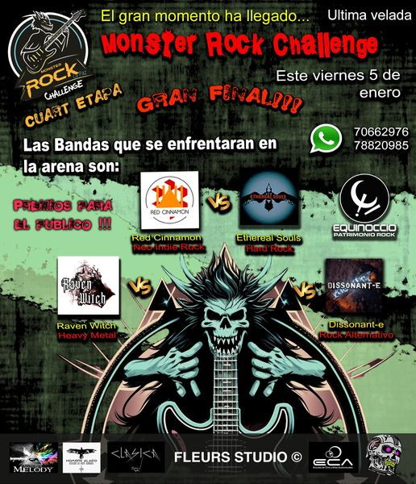
Accesibilidad
Daltonismo
 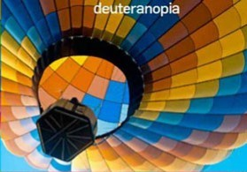
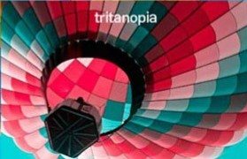
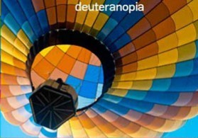
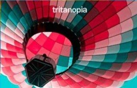
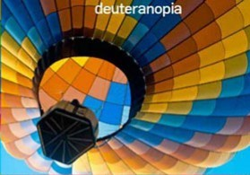
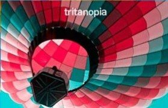
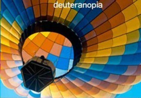
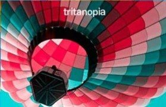
Equinoccio es mas que un bar es un legado para los amantes del rock en la ciudad de La Paz. Por mas de tres decadas hemos sido un refugio para quienes buscan buena musica una atmosfera vibrante y un lugar donde las historias se mezclan con el sonido electrico de guitarras y baterias.
Nuestra ubicacion en Sopocachi un barrio lleno de cultura y movimiento nos convierte en un punto de encuentro para locales y turistas. Desde bandas emergentes hasta artistas consagrados Equinoccio ha visto desfilar talento que ha dejado su marca en nuestro escenario.